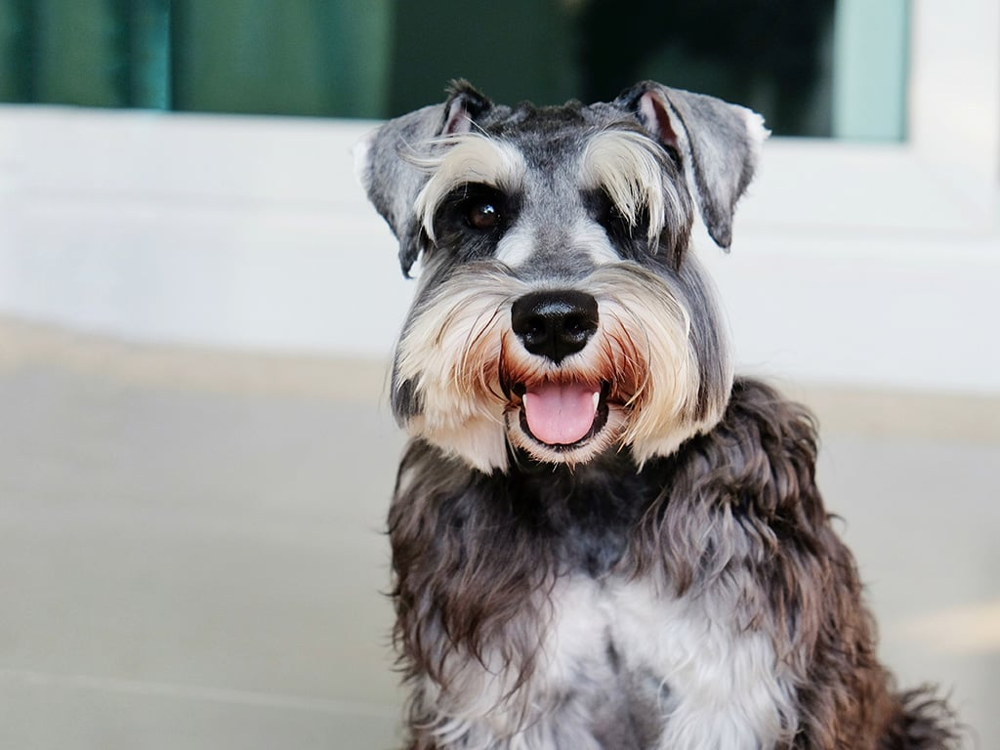

Esse cãozinho de pequeno porte é famoso por suas orelhas caídas e inteligência. Sua aparência e tamanho chamam a atenção logo de cara, isso porque, o Schnauzer miniatura é um compacto cãozinho que adora brincar, além de ser um excelente cão de guarda e ótimo companheiro para todos a sua volta. Por isso mesmo, o pet dessa raça vem sendo reconhecido como um dos terriers domésticos que mais tem conquistado o coração dos tutores. E não à toa, esse cachorro, também é muito popular entre as outras versões do Schnauzer.
Com a face bem definida e sem rugas, essa raça é a versão menor do Schnauzer Standard e o Schnauzer Gigante, e se assemelha muito a cãezinhos anões. Porém, esse pet tem uma vantagem: não possui as deficiências do nanismo. Portanto, ele costuma ser bastante ativo e resistente e, dessa forma, o ideal é realizar atividades físicas sempre que possível. O Schnauzer miniatura apresenta ainda músculos bem definidos e faz um ótimo trabalho como cão de guarda.
Não tem muito segredo quando se trata do adestramento desse bichinho. O ideal é que os ensinamentos comecem quando o Schnauzer miniatura ainda for filhote, de preferência logo nas primeiras semanas do pet no novo lar. Apesar de ser considerada uma das raças mais inteligentes do mundo animal, esse pet pode resistir um pouco quanto a obedecê-lo, porém, de forma geral, ele costuma responder bem aos comandos. Portanto, tenha paciência e dedicação na hora de treiná-lo.
Fizemos um gráfico nivelando de 0 a 5 as características da raça, veja a baixo!
A variação Standart desse cãozinho também foi enviada para ajudar os oficiais da Cruz Vermelha durante a Primeira Guerra Mundial. Isso porque, ele é bem forte, ágil e resistente. Então, foi escolhido para levar suprimentos aos atendentes na Guerra. De modo geral, a única mudança com seu irmão mediano é o corpinho mais compacto, firme e reto. Se destacam, suas orelhinhas caídas, pernas longas e fortes, e olhos arredondados cobertos pelas grossas sobrancelhas. Além do bigode que cobre toda a região da boca.
É extremamente importante oferecer o máximo cuidado e proteção para seu amiguinho de quatro patas. Por isso, sempre que notar ser necessário, dê um banho e faça uma higienização completa em todo o seu companheiro. Leve-o regularmente ao Pet Shop para aparar os extensos pelos da sobrancelha e bigode, o recomendado é que o procedimento seja feito a cada duas ou três semanas. Além disso, mantenha a pelagem sempre bem sequinha. O Schnauzer miniatura não apresenta muitos problemas quanto a saúde, porém, como com todo cãozinho, é necessário levá-lo ao médico-veterinário regularmente. Além disso, faça exames periódicos e fique sempre atento quanto aos sinais de qualquer anormalidade no comportamento do pet.
Não é fácil se acostumar com um novo lugar, não é mesmo? Por isso, é fundamental que o tutor redobre a atenção com a chegada de um Schnauzer miniatura filhote, principalmente quanto a sua interação com a nova família. Por mais que o cãozinho dessa raça seja extremamente dócil e sociável, é importante reservar alguns momentos para passear e treiná-lo ao ar livre, até acostumá-lo com seu novo lar. Além disso, cuide para que ele tome todas as vacinas necessárias e esteja sempre esbanjando saúde.